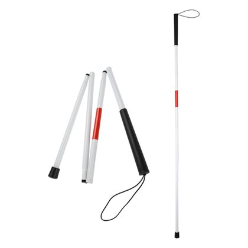
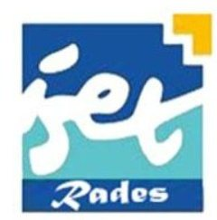
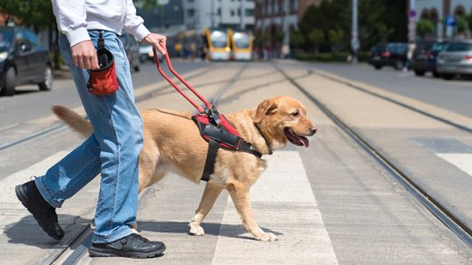
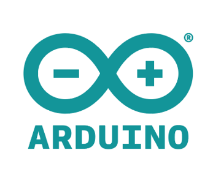
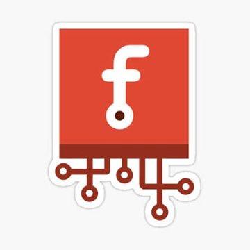
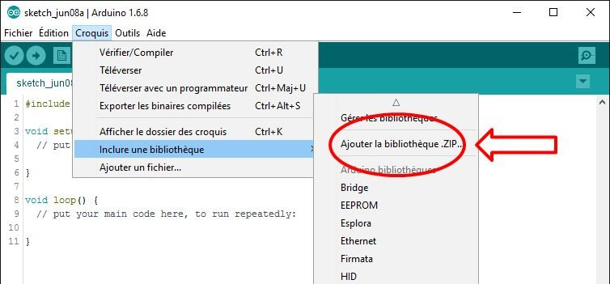
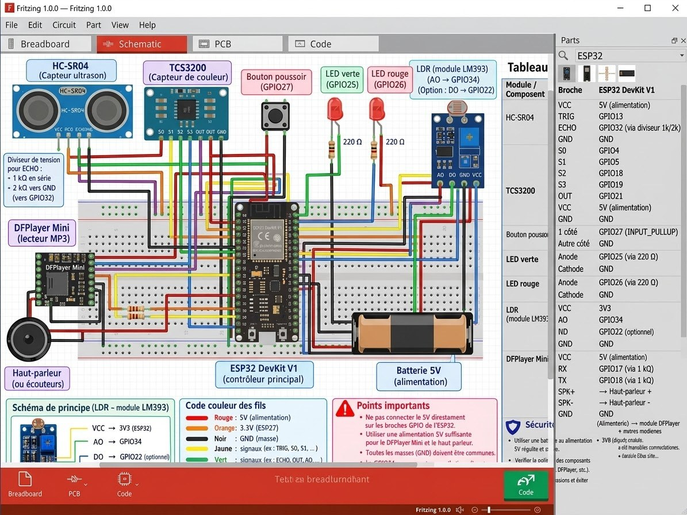

République Tunisienne
Ministère de l'Enseignement Supérieur et de la Recherche Scientifique
Direction Générale des Études Technologiques
Institut Supérieur des Études Technologiques de Radès
Projet de fin d'études
SENSIA
Lunettes intelligentes pour personnes malvoyantes
- Réalisé par
- Mohamed Mokhtar MANNAI
Rawen TABOUBI - Encadré par
- Mounira AYADI
- Département
- Électrique
- Spécialité
- Électricité industrielle
- Classe
- L3 EI2
- Année
- 2026/2027
Sommaire
01 · Planificateur
Planning du projet
Prévu
Réel
Survolez une barre pour le détail.
02 · Problématique
Se déplacer sans bien voir
Les personnes malvoyantes peuvent rencontrer des difficultés dans leurs déplacements pour :
- Détecter les obstaclessitués devant elles
- Identifier la positiond'un obstacle
- Reconnaître la couleurd'un objet
Comment les aider à gagner en autonomie, avec un dispositif simple et peu coûteux ?
03 · Propositions des solutions possibles
Trois solutions envisagées

Chien guide
SENSIA Lunettes intelligentes
Pourquoi avons-nous choisi cette solution ?
- Trois aides réunies : obstacles, couleurs, obscurité.
- Des messages vocaux clairs dans l'écouteur.
- Des composants accessibles, programmés avec Arduino IDE.
- Un complément à la canne blanche et au chien guide, pas un remplacement.
04 · Présentation de SENSIA
Objectifs SMART
- SSpécifiqueDétecter un obstacle, identifier une couleur et allumer les LED en cas d'obscurité.
- MMesurableTester la détection, au moins 5 couleurs et la réaction à un seuil de luminosité.
- AAtteignableUtiliser des composants accessibles et programmer avec Arduino IDE.
- RRéalisteRéaliser un prototype fonctionnel dans le cadre du mini-projet, évolutif pour le PFE.
- TTemporelConcevoir, programmer et tester le prototype en 2 à 3 mois.
04 · Présentation de SENSIA
Comment SENSIA fonctionne-t-elle ?
- Capteur de distance (HC-SR04)
- Capteur de couleur (TCS3200)
- LDR (luminosité)
- Bouton poussoir
Traitement des données et prise de décision
- Message vocal
- LED (si obscurité)
Reçoit l'information et agit en conséquence
04 · Présentation de SENSIA
Vue 3D des lunettes
Modèle 3D illustratif, pas un montage validé. Glissez pour tourner, molette pour zoomer, cliquez une pièce pour la voir de près.
05 · Étude du matériel utilisé
Le matériel
Cliquez un composant pour l'afficher en 3D. Glissez pour le tourner.
05 · Étude du matériel utilisé
Logiciels et outils

Arduino IDE
Programmation de l'ESP32

Fritzing
Schéma de câblage

Bibliothèques Arduino
Capteurs / Audio
05 · Étude du matériel utilisé
Schéma de câblage réalisé avec Fritzing

| Module | Broche | ESP32 DevKit V1 |
|---|
GPIO18 apparaît deux fois (TCS3200 S2 et DFPlayer TX) : à vérifier.
05 · Étude du matériel utilisé
Extrait de programmation Arduino IDE
sensia.ino
Squelette indicatif écrit à partir du tableau de câblage, non testé sur le matériel. Remplacez-le par l'extrait réel de votre programme (bloc #sensia-code du fichier).
06 · Conclusion
Conclusion
Notre projet SENSIA vise à faciliter le déplacement des personnes malvoyantes grâce à des lunettes intelligentes qui détectent les obstacles et donnent des alertes sonores.
Ce projet nous a permis d'appliquer nos connaissances techniques pour proposer une solution utile dans la vie quotidienne.
Perspectives
- Tester la reconnaissance d'au moins 5 couleurs et la réaction au seuil de luminosité.
- Intégrer l'électronique dans la monture pour réduire les câbles.
- Faire évoluer le prototype à partir des essais réalisés.
Merci pour votre attention
Des questions ou suggestions ?
Mohamed Mokhtar MANNAI · Rawen TABOUBI Encadrante : Mounira AYADI · ISET Radès